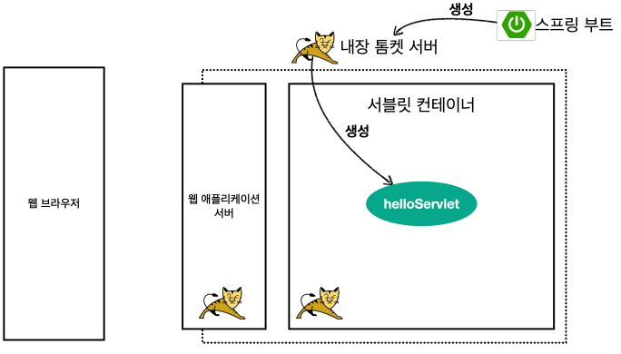
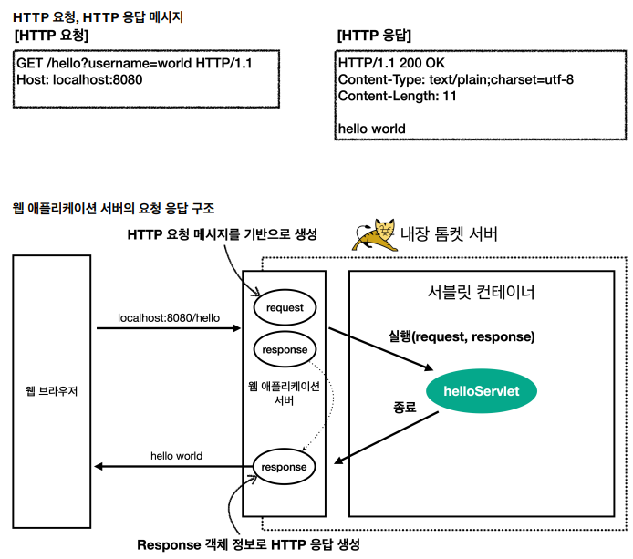

서블릿 등록
처음으로 실제 동작하는 서블릿 코드를 등록해보자.
@WebServlet(name = "helloServlet", urlPatterns = "/hello")
public class HelloServlet extends HttpServlet {
@Override
protected void service(HttpServletRequest request, HttpServletResponse response) throws ServletException, IOException {
System.out.println("HelloServlet.service");
System.out.println("request = " + request);
System.out.println("response = " + response);
String username = request.getParameter("username");
System.out.println("username = " + username);
response.setContentType("text/plain");
response.setCharacterEncoding("utf-8");
response.getWriter().write("hello " + username);
}
}
-
@WebServlet 서블릿 애노테이션
- name: 서블릿 이름
- urlPatterns: URL 매핑
HTTP 요청을 통해 매핑된 URL이 호출되면 서블릿 컨테이너는 다음 메서드를 실행한다.
protected void service(HttpServletRequest request, HttpServletResponse response)
-
웹 브라우저 실행
- http://localhost:8080/hello?username=world
- 결과: hello world
- 콘솔 실행 결과
HelloServlet.service
request = org.apache.catalina.connector.RequestFacade@5e4e72
response = org.apache.catalina.connector.ResponseFacade@37d112b6
username = world
서블릿 컨테이너 동작 방식
내장 톰캣 서버 생성


HTTP 응답에서 Content-Length는 웹 애플리케이션 서버가 자동으로 생성해준다.
HttpServletRequest - 개요
HttpServletRequest 역할
HTTP 요청 메시지를 개발자가 직접 파싱해서 사용해도 되지만, 매우 불편할 것이다. 서블릿은 개발자가 HTTP 요청
메시지를 편리하게 사용할 수 있도록 개발자 대신에 HTTP 요청 메시지를 파싱한다. 그리고 그 결과를
HttpServletRequest 객체에 담아서 제공한다.
HttpServletRequest를 사용하면 다음과 같은 HTTP 요청 메시지를 편리하게 조회할 수 있다.
HTTP 요청 메시지
POST /save HTTP/1.1
Host: localhost:8080
Content-Type: application/x-www-form-urlencoded
username=kim&age=20
-
START LINE
-
헤더
-
바디
- form 파라미터 형식 조회
- message body 데이터 직접 조회
HttpServletRequest 객체는 추가로 여러가지 부가기능도 함께 제공한다.
임시 저장소 기능
-
해당 HTTP 요청이 시작부터 끝날 때 까지 유지되는 임시 저장소 기능
- 저장: request.setAttribute(name, value)
- 조회: request.getAttribute(name)
세션 관리 기능
- request.getSession(create: true)
중요
HttpServletRequest, HttpServletResponse를 사용할 때 가장 중요한 점은 이 객체들이 HTTP 요청 메시지,
HTTP 응답 메시지를 편리하게 사용하도록 도와주는 객체라는 점이다. 따라서 이 기능에 대해서 깊이있는 이해를
하려면
HTTP 스펙이 제공하는 요청, 응답 메시지 자체를 이해해야 한다.
HttpServletRequest - 기본 사용법
HttpServletRequest가 제공하는 기본 기능들을 알아보자.
//hello.servlet.basic.request.RequestHeaderServlet
//http://localhost:8080/request-header?username=hello
@WebServlet(name = "requestHeaderServlet", urlPatterns = "/request-header")
public class RequestHeaderServlet extends HttpServlet {
@Override
protected void service(HttpServletRequest request, HttpServletResponse response) throws ServletException, IOException {
printStartLine(request);
printHeaders(request);
printHeaderUtils(request);
printEtc(request);
response.getWriter().write("ok");
}
}
start-line 정보
private void printStartLine(HttpServletRequest request) {
System.out.println("--- REQUEST-LINE - start ---");
System.out.println("request.getMethod() = " + request.getMethod()); //GET
System.out.println("request.getProtocol() = " + request.getProtocol()); //HTTP/1.1
System.out.println("request.getScheme() = " + request.getScheme()); //http
// http://localhost:8080/request-header
System.out.println("request.getRequestURL() = " + request.getRequestURL());
// /request-header
System.out.println("request.getRequestURI() = " + request.getRequestURI());
//username=hi
System.out.println("request.getQueryString() = " + request.getQueryString());
System.out.println("request.isSecure() = " + request.isSecure()); //https 사용 유무
System.out.println("--- REQUEST-LINE - end ---");
System.out.println();
}
결과
--- REQUEST-LINE - start ---
request.getMethod() = GET
request.getProtocol() = HTTP/1.1
request.getScheme() = http
request.getRequestURL() = http://localhost:8080/request-header
request.getRequestURI() = /request-header
request.getQueryString() = username=hello
request.isSecure() = false
--- REQUEST-LINE - end ---
헤더정보
//Header 모든 정보
private void printHeaders(HttpServletRequest request) {
System.out.println("--- Headers - start ---");
/*
Enumeration<String> headerNames = request.getHeaderNames();
while (headerNames.hasMoreElements()) {
String headerName = headerNames.nextElement();
System.out.println(headerName + ": " + request.getHeader(headerName));
}
*/
request.getHeaderNames().asIterator()
.forEachRemaining(headerName -> System.out.println(headerName + ": " + request.getHeader(headerName)));
System.out.println("--- Headers - end ---");
System.out.println();
}
결과
--- Headers - start ---
host: localhost:8080
connection: keep-alive
cache-control: max-age=0
sec-ch-ua: "Chromium";v="88", "Google Chrome";v="88", ";Not A Brand";v="99"
sec-ch-ua-mobile: ?0
upgrade-insecure-requests: 1
user-agent: Mozilla/5.0 (Macintosh; Intel Mac OS X 11_2_0) AppleWebKit/537.36
(KHTML, like Gecko) Chrome/88.0.4324.150 Safari/537.36
accept: text/html,application/xhtml+xml,application/xml;q=0.9,image/avif,image/
webp,image/apng,*/*;q=0.8,application/signed-exchange;v=b3;q=0.9
sec-fetch-site: none
sec-fetch-mode: navigate
sec-fetch-user: ?1
sec-fetch-dest: document
accept-encoding: gzip, deflate, br
accept-language: ko,en-US;q=0.9,en;q=0.8,ko-KR;q=0.7
--- Headers - end ---
Header 편리한 조회
//Header 편리한 조회
private void printHeaderUtils(HttpServletRequest request) {
System.out.println("--- Header 편의 조회 start ---");
System.out.println("[Host 편의 조회]");
System.out.println("request.getServerName() = " + request.getServerName()); //Host 헤더
System.out.println("request.getServerPort() = " + request.getServerPort()); //Host 헤더
System.out.println();
System.out.println("[Accept-Language 편의 조회]");
request.getLocales().asIterator().forEachRemaining(locale -> System.out.println("locale = " + locale));
System.out.println("request.getLocale() = " + request.getLocale());
System.out.println();
System.out.println("[cookie 편의 조회]");
if (request.getCookies() != null) {
for (Cookie cookie : request.getCookies()) {
System.out.println(cookie.getName() + ": " + cookie.getValue());
}
}
System.out.println();
System.out.println("[Content 편의 조회]");
System.out.println("request.getContentType() = " + request.getContentType());
System.out.println("request.getContentLength() = " + request.getContentLength());
System.out.println("request.getCharacterEncoding() = " + request.getCharacterEncoding());
System.out.println("--- Header 편의 조회 end ---");
System.out.println();
}
결과
--- Header 편의 조회 start ---
[Host 편의 조회]
request.getServerName() = localhost
request.getServerPort() = 8080
[Accept-Language 편의 조회]
locale = ko
locale = en_US
locale = en
locale = ko_KR
request.getLocale() = ko
[cookie 편의 조회]
[Content 편의 조회]
request.getContentType() = null
request.getContentLength() = -1
request.getCharacterEncoding() = UTF-8
--- Header 편의 조회 end ---
기타 정보
기타 정보는 HTTP 메시지의 정보는 아니다.
//기타 정보
private void printEtc(HttpServletRequest request) {
System.out.println("--- 기타 조회 start ---");
System.out.println("[Remote 정보]");
System.out.println("request.getRemoteHost() = " + request.getRemoteHost());
System.out.println("request.getRemoteAddr() = " + request.getRemoteAddr());
System.out.println("request.getRemotePort() = " + request.getRemotePort());
System.out.println();
System.out.println("[Local 정보]");
System.out.println("request.getLocalName() = " + request.getLocalName());
System.out.println("request.getLocalAddr() = " + request.getLocalAddr());
System.out.println("request.getLocalPort() = " + request.getLocalPort());
System.out.println("--- 기타 조회 end ---");
System.out.println();
}
결과
--- 기타 조회 start ---
[Remote 정보]
request.getRemoteHost() = 0:0:0:0:0:0:0:1
request.getRemoteAddr() = 0:0:0:0:0:0:0:1
request.getRemotePort() = 54305
[Local 정보]
request.getLocalName() = localhost
request.getLocalAddr() = 0:0:0:0:0:0:0:1
request.getLocalPort() = 8080
--- 기타 조회 end ---
Http 요청 데이터 - 개요
HTTP 요청 메시지를 통해 클라이언트에서 서버로 데이터를 전달하는 방법
주로 다음 3가지 방법을 사용한다.
-
GET - 쿼리 파라미터
- /url**?username=hello&age=20**
- 메시지 바디 없이, URL의 쿼리 파라미터에 데이터를 포함해서 전달
- 예) 검색, 필터, 페이징 등에서 많이 사용하는 방식
-
POST - HTML Form
- content-type: application/x-www-form-urlencoded
- 메시지 바디에 쿼리 파라미터 형식으로 전달 username=hello&age=20
- 예) 회원 가입, 상품 주문, HTML Form 사용
-
HTTP message body에 데이터를 직접 담아서 요청
- HTTP API에서 주로 사용, JSON, XML, TEXT
-
데이터 형식은 주로 JSON 사용
Http 요청 데이터 - GET 쿼리 파라미터
다음 데이터를 클라이언트에서 서버로 전송해보자.
전달 데이터
메시지 바디 없이, URL의
쿼리 파라미터를 사용해서 데이터를 전달하자.
예) 검색, 필터, 페이징 등에서 많이 사용하는 방식
쿼리 파라미터는 URL에 다음과 같이 ?를 시작으로 보낼 수 있다. 추가 파라미터는 &로 구분하면 된다.
- http://localhost:8080/request-param?username=hello&age=20
서버에서는 HttpServletRequest가 제공하는 다음 메서드를 통해 쿼리 파라미터를 편리하게 조회할 수 있다.
쿼리 파라미터 조회 메서드
String username = request.getParameter("username"); //단일 파라미터 조회
Enumeration<String> parameterNames = request.getParameterNames(); //파라미터 이름들 모두 조회
Map<String, String[]> parameterMap = request.getParameterMap(); //파라미터를 Map으로 조회
String[] usernames = request.getParameterValues("username"); //복수 파라미터 조회
- 1. 파라미터 전송 기능
-
2. 동일한 파라미터 전송 가능
- ?username=hello&username=kim&age=20
복수 파라미터에서 단일 파라미터 조회
username=hello&username=kim 과 같이 파라미터 이름은 하나인데, 값이 중복이면 어떻게 될까?
request.getParameter() 는 하나의 파라미터 이름에 대해서 단 하나의 값만 있을 때 사용해야 한다. 지금처럼 중
복일 때는 request.getParameterValues() 를 사용해야 한다.
참고로 이렇게 중복일 때 request.getParameter() 를 사용하면 request.getParameterValues() 의 첫
번째 값을 반환한다.
Http 요청 데이터 - POST HTML FORM
이번에는 HTML의 Form을 사용해서 클라이언트에서 서버로 데이터를 전송해보자.
주로 회원가입, 상품 주문 등에서 사용하는 방식이다.
특징
- context-type: application/x-www-form-urlencoded
- 메시지 바디에 쿼리 파라미터 형식으로 데이터를 전달한다. username=hello&age=20
POST의 HTML Form을 전송하면 웹 브라우저는 다음 형식으로 HTTP 메시지를 만든다.
- 요청 URL: http://localhost:8080/request-param
- content-type: application/x-www-form-urlencoded
- message body: username=hello&age=20
application/x-www-form-urlencoded 형식은 앞서 GET에서 살펴본 쿼리 파라미터 형식과 같다. 따라서
쿼리 파라미터 조회 메서드를 그대로 사용하면 된다.
클라이언트(웹 브라우저) 입장에서는 두 방식에 차이가 있지만, 서버 입장에서는 둘의 형식이 동일하므로,
request.getParameter() 로 편리하게 구분없이 조회할 수 있다.
content-type은 HTTP 메시지 바디의 데이터 형식을 지정한다.
GET URL 쿼리 파라미터 형식으로 클라이언트에서 서버로 데이터를 전달할 때는 HTTP 메시지 바디를 사용하
지 않기 때문에 content-type이 없다.
POST HTML Form 형식으로 데이터를 전달하면 HTTP 메시지 바디에 해당 데이터를 포함해서 보내기 때문에
바디에 포함된 데이터가 어떤 형식인지 content-type을 꼭 지정해야 한다. 이렇게 폼으로 데이터를 전송하는 형
식을 application/x-www-form-urlencoded 라 한다.
Http 요청 데이터 - API 메시지 바디 - 단순 텍스트
-
HTTP message body에 데이터를 직접 담아서 요청
- HTTP API에서 주로 사용, JSON, XML, TEXT
- 데이터 형식은 주로 JSON 사용
- POST, PUT, PATCH
Http 요청 데이터 - API 메시지 바디 - JSON
JSON 형식 전송
- POST http://localhost:8080/request-body-json
- content-type: application/json
- message body: {"username": "hello", "age": 20}
- 결과: messageBody = {"username": "hello", "age": 20}
JSON 결과를 파싱해서 사용할 수 있는 자바 객체로 변환하려면 Jackson, Gson 같은 JSON 변환 라이브러리
를 추가해서 사용해야 한다. 스프링 부트로 Spring MVC를 선택하면 기본으로 Jackson 라이브러리
( ObjectMapper )를 함께 제공한다.
HTML form 데이터도 메시지 바디를 통해 전송되므로 직접 읽을 수 있다. 하지만 편리한 파리미터 조회 기능
( request.getParameter(...) )을 이미 제공하기 때문에 파라미터 조회 기능을 사용하면 된다.